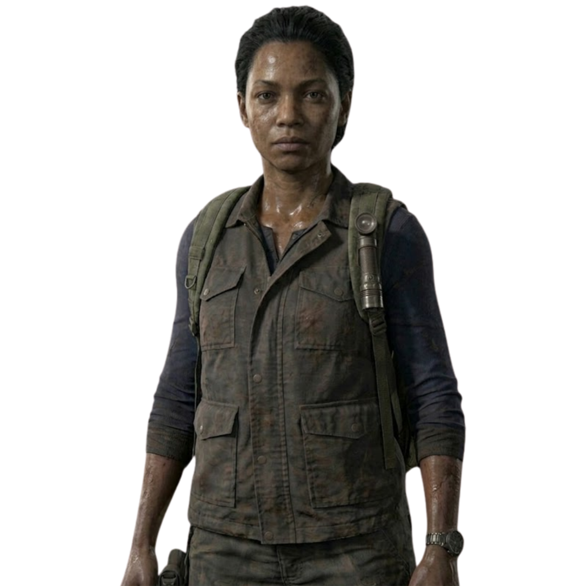

Sobreviventes e suas histórias
“A gente faz o que tem que fazer.”
Joel é um sobrevivente experiente que perdeu sua filha no início do surto. Cínico e fechado, ele é contratado para levar Ellie até os Vaga-lumes, sem imaginar que essa jornada mudaria o significado de família para sempre.
ELLIE
Vinculo PaternalTOMMY
IrmãoTESS
AliadaSARAH
FilhaSTATUS
IDADE
53
FUNÇÃO
Contrabandista
ORIGEM
Austin, Texas
"Depois de tudo que passamos... Tudo que eu fiz, não pode ser em vão."
Ellie é uma órfã que cresceu em uma zona de quarentena militarizada. Após ser mordida e não se transformar, ela descobre ser imune à infecção por Cordyceps. Determinada e resiliente, ela atravessa o país ao lado de Joel, desenvolvendo um laço profundo enquanto enfrenta os perigos de um mundo devastado.
JOEL
Vinculo PaternalRILEY
Melhor AmigaMarlene
AliadaSTATUS
IDADE
14
FUNÇÃO
Chave para a Cura
ORIGEM
Boston, Massachusettss
"Aqui. Você ficava reclamando do seu relógio quebrado, então eu pensei, sabe. Você gosta?"
Sarah é a filha de Joel e uma adolescente típica. Ela demonstra uma maturidade precoce e uma relação de muita cumplicidade e carinho com o pai. Sua vida muda drasticamente na noite do seu aniversário, quando o surto do fungo Cordyceps começa a destruir a sociedade.
JOEL
PaiTOMMY
TioMARIA
Tia PaternaSTATUS
IDADE
12
FUNÇÃO
Estudante
ORIGEM
Austin, Texas
"Eu posso ganhar algum tempo pra você, mas você tem que correr... Eu não vou me transformar em uma daquelas coisas."
Tess é uma sobrevivente endurecida e parceira de longa data de Joel no mercado negro de Boston. Respeitada e temida no submundo da Zona de Quarentena, ela é a força motriz que convence Joel a aceitar a missão de contrabandear Ellie. Ela demonstra uma coragem inabalável ao colocar o destino da humanidade acima de sua própria vida.
JOEL
Parceiro de negócios e aliadoELLIE
ProtegidaMARLENE
Conhecida de negóciosSTATUS
IDADE
30
FUNÇÃO
Contrabandista
ORIGEM
Boston, Massachusetts
"Não há outra forma. Ela é a nossa única chance."
Marlene é a líder dos Vagalumes, um grupo de milícia revolucionária que luta contra o regime militar da FEDRA. Amiga próxima da mãe de Ellie, ela prometeu cuidar da menina. Marlene carrega o peso de liderar uma resistência desesperada e toma a difícil decisão de enviar Ellie com Joel para tentar encontrar uma cura para a humanidade.
ELLIE
GuardiãJOEL
ConhecidoANNA
Conhecida de negócios
STATUS
IDADE
40
FUNÇÃO
Líder dos Vagalumes
ORIGEM
Boston, Massachusetts
"Minha causa é minha família agora."
Tommy é o irmão mais novo de Joel e ex-membro dos Vagalumes. Após anos sobrevivendo ao lado do irmão em condições brutais, ele buscou um propósito maior e acabou fundando uma comunidade próspera em Jackson, Wyoming. Tommy é um atirador de elite excepcional e possui um senso de moralidade e esperança que muitas vezes contrasta com o pragmatismo de Joel.
JOEL
IrmãoMARIA
EsposaELLIE
"Sobrinha"STATUS
IDADE
45
FUNÇÃO
Líder da comunidade de Jackson
ORIGEM
Austin, Texas
"Basta uma. Uma mancada e eu me transformo em uma daquelas viúvas. Entendeu?"
Maria é a líder da próspera comunidade de Jackson. Antes do surto, ela era advogada, e usou suas habilidades de organização e liderança para ajudar a construir um refúgio seguro para centenas de pessoas. Ela é uma líder protetora com os seus, garantindo que a eletricidade, a comida e a segurança da cidade funcionem perfeitamente.
TOMMY
MaridoJOEL
CunhadoELLIE
"Sobrinha"STATUS
IDADE
42
FUNÇÃO
Líder da comunidade de Jackson
ORIGEM
Jackson, Wyoming
"Há um motivo para eu ainda estar vivo e eles não. É porque eu não me importo com ninguém."
Bill é um sobrevivente solitário, altamente habilidoso e paranoico que mantém uma cidade inteira (Lincoln) protegida por armadilhas e explosivos. Ele vive isolado após a perda de seu parceiro, Frank, e possui uma dívida com Joel, o que o leva a ajudar relutantemente na busca por peças para um carro.
JOEL
Dívida de negóciosFRANK
Ex-ParceiroELLIE
"Hostilidade" mútuaSTATUS
IDADE
50
FUNÇÃO
Especialista em armadilhas
ORIGEM
Lincoln, Massachusetts